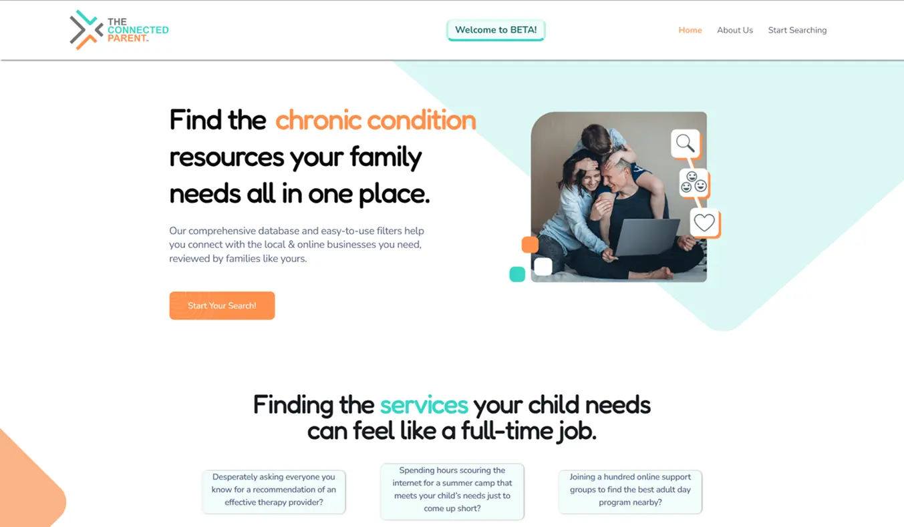
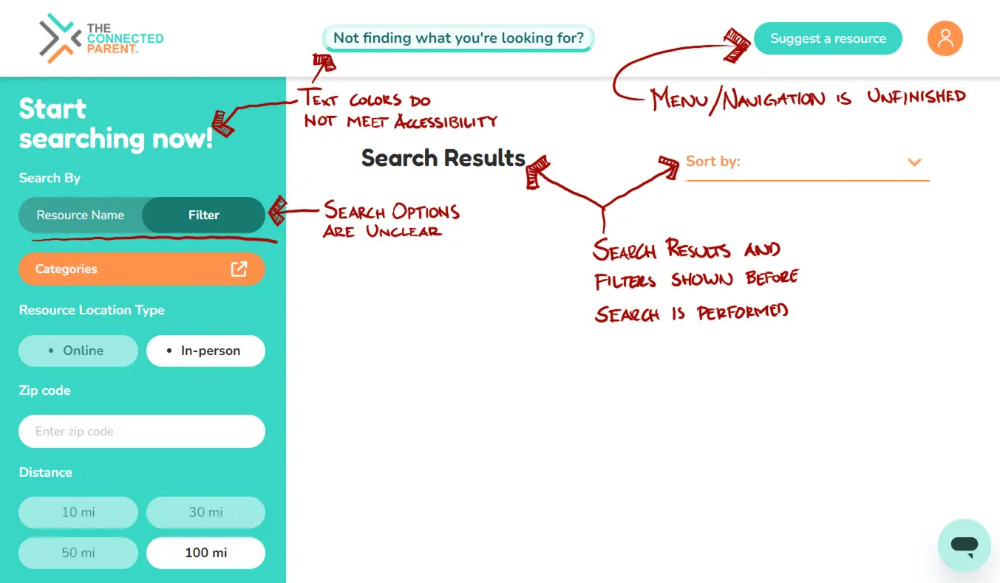
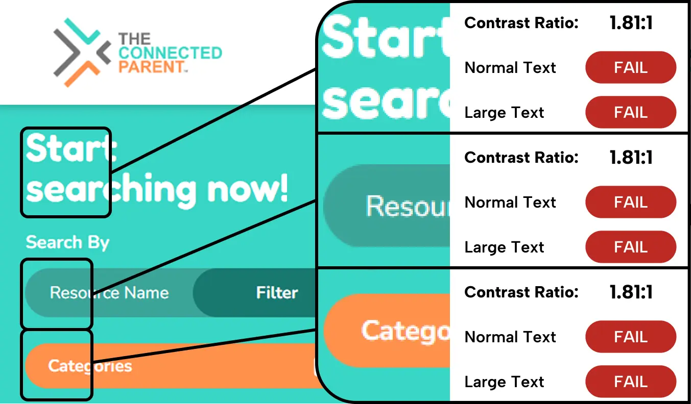

Users struggled to complete basic core actions for the platform, and colors failed accessibility standards, creating usability and compliance concerns. Our challenge was to simplify key flows and create a playful yet accessible design.

The existing homepage, confusing process to create an account, and requiring too much effort to begin searching

The previous search with a confusing process, CTA's, and filter options

ADA contrast audit of the existing site did not meet WCAG 2.2 guidelines in several places
Problems
Confusing account creation and navigation
Ineffective search and filtering
Reviews hard to write and discover
Color palette failed WCAG guidelines
Goals
Streamline key workflows
Design reusable, flexible components
Meet accessibility requirements
Keep a playful, family-friendly tone